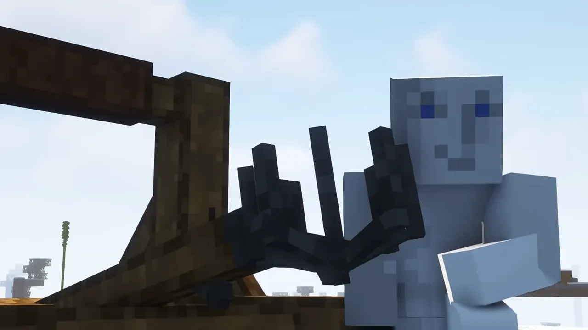
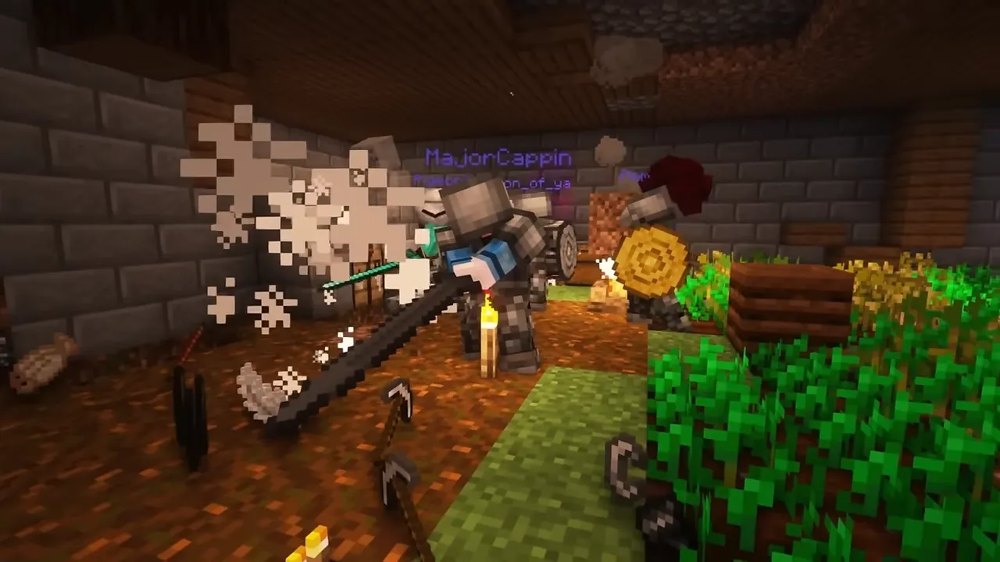
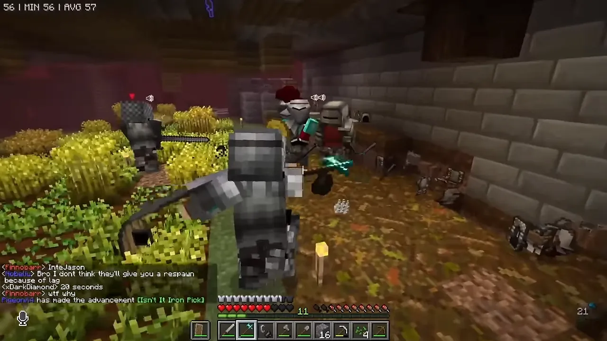
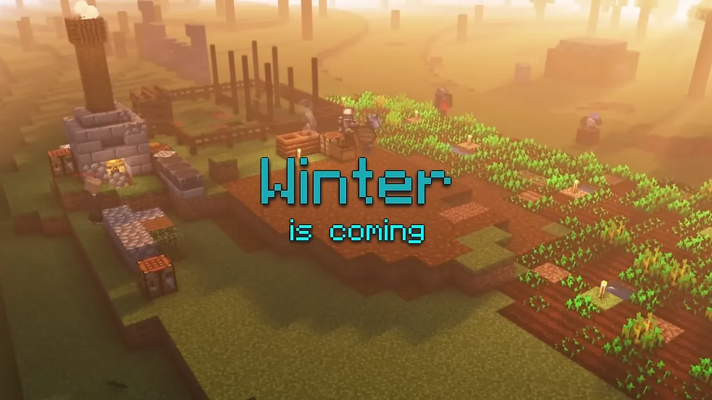

Minecraft Castle Siege
Epic medieval battles

About
Minecraft civilisations was a viral trend on YouTube and I was very enthusiastic. Because of my experience with Albion Online which has a lot of politics, people drama and interesting game mechanics that produce those, I loved to see the stories documented in these hour long videos.
Eventually, a video hit my YouTube recommend which focused on medieval warfare. This specifically, had been a childhood dream so when I heard that they would organise more events I joined the Discord and participated in community run, offline (not recorded) events. Quickly, my inner game developer started itching. I saw a lot of room for improvement, game design problems and general imbalance.
I whipped up a document explaining my findings and quickly after helped out developing with follow up event that was better and more exciting. Eventually, that lead to this amazing video.
Some challenges that I was surprised with is the fact that Minecraft players are a special kind of player. They will try to exploit any game mechanics they can think of, have little to no attention span and it's difficult to keep them in order. Many of these things could be solved with game mechanics and game design, but as you're working in the framework of Minecraft, you're restricted to the tools your given by Minecraft.
As a kid growing up on YouTube Minecraft videos, contributing to a big YouTuber's video in a meaningful way was a dream come true.
Screenshots



